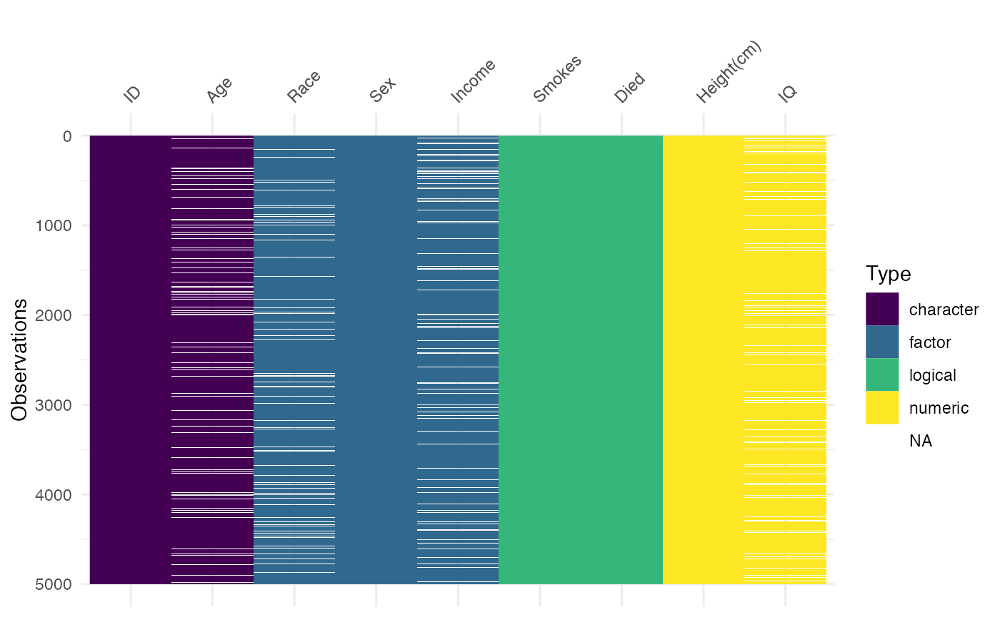

Customising colour palettes in visdat
Source:vignettes/customising-colour-palettes.Rmd
customising-colour-palettes.RmdHow to provide your own colour palette?
This vignette shoes you how to provide your own colour palette with visdat.
A visdat plot is a ggplot object - so we can use the tools from ggplot to tinker with colours. In this case, that is the scale_fill_manual function.
A “standard” visdat plot might be like so:
vis_dat(typical_data)You can name the colours yourself like so (after first loading the ggplot package.
library(ggplot2)
vis_dat(typical_data) +
scale_fill_manual(
values = c(
"character" = "red",
"factor" = "blue",
"logical" = "green",
"numeric" = "purple",
"NA" = "gray"
))This is a pretty, uh, “popping” set of colours? You can also use some hex colours instead.
Say, taken from palette():
palette()
#> [1] "black" "#DF536B" "#61D04F" "#2297E6" "#28E2E5" "#CD0BBC" "#F5C710"
#> [8] "gray62"
vis_dat(typical_data) +
scale_fill_manual(
values = c(
"character" = "#61D04F",
"factor" = "#2297E6",
"logical" = "#28E2E5",
"numeric" = "#CD0BBC",
"NA" = "#F5C710"
))How can we get nicer ones?
Well, you can use any of ggplot’s scale_fill_* functions from inside ggplot2
For example:
vis_dat(typical_data) +
scale_fill_brewer()
#> Warning: Removed 2000 rows containing missing values (`geom_raster()`).
vis_dat(typical_data) +
scale_fill_viridis_d()
#> Warning: Removed 2000 rows containing missing values (`geom_raster()`).
Happy colour palette exploring! You might want to take a look at some of the following colour palettes from other packages: